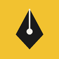
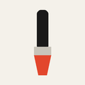
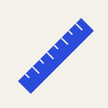

Инструменты дизайнера
Программы и вещи, без которых не обходится работа графического дизайнера.
Раздел 1. Таблица программ
| Значок | Программа | Для чего | Сайт |
|---|---|---|---|
 |
Adobe Illustrator | Векторная графика: логотипы, иконки, иллюстрации | adobe.com |
 |
Adobe Photoshop | Растровая графика: обработка фото, коллажи | adobe.com |
 |
Figma | Интерфейсы, макеты сайтов, совместная работа | figma.com |
 |
Пример работы — плакат. Нажми на миниатюру, чтобы открыть большое изображение. | Подробнее о плакатах | |
Раздел 2. Ручные инструменты
- Скетчбук и карандаши
- Маркеры
- спиртовые
- линеры
- Линейка и макетный нож